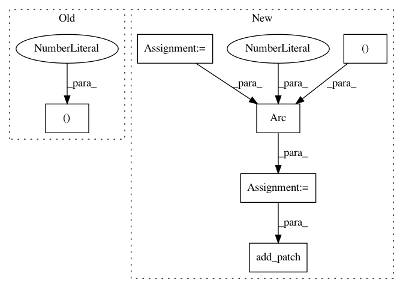

d67550cee52588a9ff3cff49fbc45b0d878bca9a,lib/matplotlib/tests/test_patches.py,,test_large_arc,#,496
Before Change
ax = plt.figure().add_subplot()
ax.set_axis_off()
// A large arc that crosses the axes view limits.
ax.add_patch(mpatches.Arc((-100, 0), 201, 201))
After Change
fig, (ax1, ax2) = plt.subplots(1, 2)
x = 210
y = -2115
diameter = 4261
for ax in [ax1, ax2]:
a = mpatches.Arc((x, y), diameter, diameter, lw=2, color="k")
ax.add_patch(a)
ax.set_axis_off()
ax.set_aspect("equal")
// force the high accuracy case
ax1.set_xlim(7, 8)
In pattern: SUPERPATTERN
Frequency: 3
Non-data size: 6
Instances
Project Name: matplotlib/matplotlib
Commit Name: d67550cee52588a9ff3cff49fbc45b0d878bca9a
Time: 2020-06-16
Author: tcaswell@gmail.com
File Name: lib/matplotlib/tests/test_patches.py
Class Name:
Method Name: test_large_arc
Project Name: biotite-dev/biotite
Commit Name: b226add036b6a7693618f515641f939e1ab9bb0e
Time: 2020-05-26
Author: tom.mueller@beachouse.de
File Name: doc/examples/scripts/structure/base_pairs.py
Class Name:
Method Name:
Project Name: matplotlib/matplotlib
Commit Name: 98ab2a07920610dae862d95363243572a84ea2c7
Time: 2020-06-16
Author: tcaswell@gmail.com
File Name: lib/matplotlib/tests/test_patches.py
Class Name:
Method Name: test_large_arc